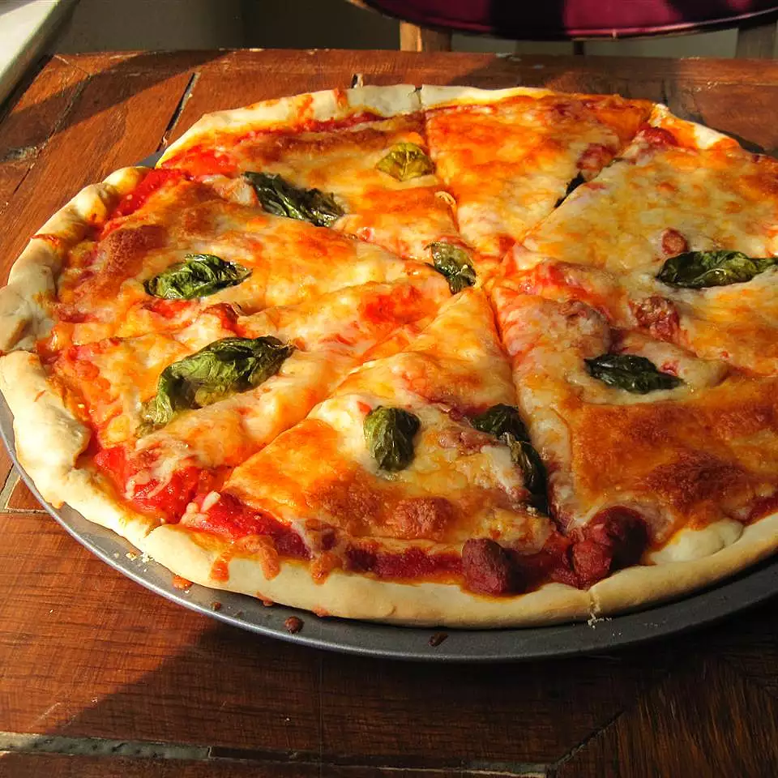

Photo by Inna Podolska on Unsplash
Description
This Pizza Margherita features tomato sauce, mozzarella, and basil, with just a hint of sea salt.
Ingredients
- 3 ½ cups of all-purpose flour
- One (1) teaspoon of salt
- One (1) cup of water
- .25 ounce of active dry yeast
- One (1) pinch of white sugar
- ¼ cup of flour for dusting
- Two (2) cups of pizza sauce
- Twenty (20) slices of fresh mozzarella cheese
- Twenty (20) leaves of fresh basil
- Olive oil
- Salt to taste
Steps
- Stir flour and one (1) teaspoon of salt in a bowl. Set aside.
- Mix water, yeast, and sugar in a large bowl. Let stand until yeast forms a creamy foam, about 5 minutes.
- Stir half the flour mixture into the yeast mixture until no dry spots remain. Stir in remaining flour, 1/2 cup at a time, mixing well after each addition. When the dough pulls together, turn it onto a lightly floured surface and knead until smooth and elastic, about 8 minutes.
- Lightly oil a large bowl, then place dough in the bowl and turn to coat with oil. Cover with a light cloth and let rise in a warm place (80 to 95 degrees F (27 to 35 degrees C)) until doubled in volume, about 1 hour. Punch dough down, divide into four (4) equal pieces, and form each into a ball.
- Preheat the oven with a pizza stone to 500 degrees F (260 degrees C).
- Stretch and pat one (1) dough ball to form a circle 10 to 12 inches in diameter. Place dough on a lightly floured pizza peel. Top with 1/2 cup of tomato sauce and spread to cover within an inch of the edge of the dough. Arrange five (5) slices of mozzarella cheese on top of the tomato sauce, then place five (5) basil leaves on top. Drizzle pizza with one (1) tablespoon olive oil and sprinkle with sea salt to taste. Repeat for the three (3) remaining dough balls.
- Slide each pizza onto the pizza stone in the preheated oven. Bake until cheese is bubbly and the underside of the crust is golden brown, 5 to 7 minutes.